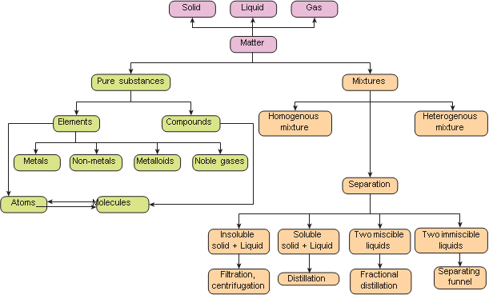

1. The separation of denser particles from lighter particles done by rotation at high speed is called dash.
A bracket closed Filtration
b bracket closed sedimentation
C bracket closed decantation
d bracket closed centrifugation
2. Among the following dash is a mixture
A bracket closed Common Salt b bracket closed Juice
C bracket closed Carbon dioxide d bracket closed Pure Silver
3. When we mix a drop of ink in water we get a dash.
A bracket closed Heterogeneous Mixture
B bracket closed Compound
C bracket closed Homogeneous Mixture
d bracket closed Suspension
4. dash is essential to perform separation by solvent extraction method.
A bracket closed Separating funnel
b bracket closed filter paper
c bracket closed centrifuge machine
d bracket closed sieve
5. dash has the same properties throughout the sample
A bracket closed Pure substance
b bracket closed Mixture
c bracket closed Colloid
d bracket closed Suspension
1. Oil and water are immiscible with each other.
2. A compound cannot be broken into simpler substances chemically.
3. Liquid hyphan liquid colloids are called gel.
4. Buttermilk is an example of heterogeneous mixture.
5. Aspirin is composed of 60 percent Carbon, 4.5 percent Hydrogen and 35.5 percent Oxygen by mass. Aspirin is a mixture.
Element |
Settles down on standing |
Compound |
Impure substance |
Colloid |
Made up of molecules |
Suspension |
Pure substance |
Mixture |
Made up of atoms |
Roman 4. Fill in the blanks.
1. A dash mixture has no distinguishable boundary between its components.
2. An example of a substance that sublimes is dash.
3. Alcohol can be separated from water by dash.
4. In petroleum refining, the method of separation used is dash.
5. Chromatography is based on the principle of dash.
1. Differentiate between absorption and adsorption.
2. Define Sublimation.
3. A few drops of ‘Dettol’ when added to water the mixture turns turbid. Why question mark
4. Name the apparatus that you will use to separate the components of mixtures containing two, 1. miscible liquids, ii. immiscible liquids.
5 Name the components in each of the following mixtures.
1. Ice cream 2. Lemonade 3. Air
4. Soil
1. Which of the following are pure substances question mark Ice, Milk, Iron, Hydrochloric acid, Mercury, Brick and Water.
2. Oxygen is very essential for us to live. It forms 21 percent of air by volume. Is it an element or compound question mark
3. You have just won a medal made of 22-carat gold. Have you just procured a pure substance or impure substance question mark
4. How will you separate a mixture containing saw dust, naphthalene and iron filings question mark
5. How are homogenous solutions different from heterogeneous solution question mark Explain with examples.
1. Write the differences between elements and compounds and give an example for each.
2. Explain Tyndall effect and Brownian movement with suitable diagram.
3 How is a mixture of common salt, oil and water separated question mark You can use a combination of different methods
1. A Textbook of Physical Chemistry, K.K. Sharma and L.K. Sharma S.Chand publishing.
2. Materials, Matter and Particles A Brief History By Bracket OPEN author bracket closed: Michael M Woolfson Bracket OPEN University of York, UK bracket closed
3. Suresh S, Keshav A. “Textbook of Separation Processes”, Studium Press Bracket OPEN India bracket closed Pvt. Ltd.
1. http://www.worldscientific.com/ world sci books/10.1142/P671
2. http://www.chemteam.info/ ChemTeamIndex.html
3.http://www.chem4kids.com/files/matter_ solution2.html
4. https://www.youtube.com/ watch question mark v=loakplUEZYQ
